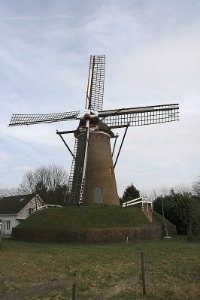
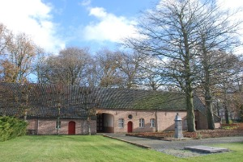

 De Johanna is een ronde stenen molen aan de Bergsestraat te Huijbergen, in de Noord-Brabantse gemeente Woensdrecht. De molen is in 1862 in opdracht van Petrus Johannes Backx gebouwd, op aanraden van de pastoor van de plaatselijke parochie, die een molen in zijn parochie wilde hebben. De parochie was in 1859 gehalveerd omdat Kalmthoutse Hoek was weggevallen. Na de afscheiding van België in 1830 was er een landsgrens door de parochie getrokken, maar de parochie is daarna nog bijna dertig jaar een geheel gebleven. De bouwvergunning die voor de Johanna is verleend vermeldde ook gebruik als oliemolen en mogelijk is de molen ook als zodanig ingericht geweest. Ook bevond zich een zaagwerk in de Johanna. Tijdens de Tweede Wereldoorlog werd de molen gebruikt om graan te malen. In de jaren 60 van de twintigste eeuw raakte de molen in verval. Hij werd in 1966 aan de gemeente Huijbergen verkocht, die hem meteen heeft laten restaureren. In 1967 is de molen maalvaardig gemaakt. Hij wordt tegenwoordig meestal op woensdagochtend en zondagmiddag door vrijwillige molenaars bedreven.
 Midden in het centrum van Huijbergen, gemeente Woensdrecht, ligt het Wilhelmietenmuseum. Een lange oprijlaan, de Staartsestraat, geflankeerd door hoge bomen leidt naar een poort in een langgerekt gebouw. Deze poort geeft toegang tot een binnenplaats en tot de direct erachter gelegen deuren van de gebouwen van het Wilhelmietenmuseum. De naam en huisvesting verwijzen naar het verleden, de tijd dat hier de Wilhelmieten een klooster hadden. Met hun komst is ook Huijbergen ontstaan. De Wilhelmieten is een orde van mannelijke kloosterlingen genoemd naar Wilhelmus van Malevalle († 1157), die zich na zijn bekering en pelgrimages, als kluizenaar terugtrekt in een afgelegen dal ‘Malavalle’, ten noorden van Castiglione della Pescaia (Toscane, Italië). Hij krijgt volgelingen die net als hij de strenge leer van de kerkhervormer Bernardus van Clairvaux (1090-1153) aanhangen en een orde stichten aanvankelijk volgens de regel van de Benedictijnen en later van de Cisterciënsers. Vanuit Italië verspreidt de orde zich ten noorden van de Alpen in het huidige Duitsland, België, Frankrijk, en Hongarije.